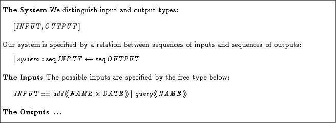
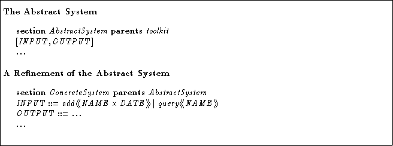
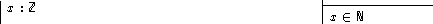
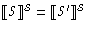
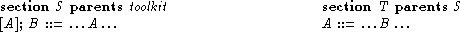
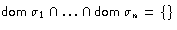
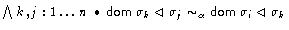

Proposal for the Z Standard, by Wolfgang Grieskamp (wg@cs.tu-berlin.de), November 11, 1998, (v2) , postscript version
Global constants can be declared multiple times in the environment of a section. All declarations must be type-compatible.
Z specifications are often literate and do not only present the pure formalisation but also documentation. For the purpose of documentation, an approved technique is step-wise refinement:

The same technique is desirable to be supported in a refinement process over sections boundaries:

One important counter-argument against multiple declarations is that from the point of view of human understanding and of formal proof of specifications it is is desirable to have a unique point of the ``defining property'' of a Z name. The main argument against: this is only true for one particular method how to use Z There are other possible usages of Z:
Since it is hard to predict all the possible usages of Z, the Standard should not restrict the notation because of methodological considerations. Methods, perhaps with accompanying tool-support, which put conditions on the usage of Z going further then the Standard, can be build on top of it.
Multiple declarations improve orthogonality of Standard Z:

This proposal depends on WG.48.4.
Tools working in batch mode which don't implement this feature may be still regarded as conforming, since syntactic transformations can build which eliminate multiple declarations (see the ANF below).
From any section, one can syntactically build what I would call the
algebraic normal form,
ANFS = (GS,CS,PS) (see proposal
WG.48.3 for details). From ANFS one can re-construct
a Z section
 .
Assuming that the
semantics equations ensure that (for each arbitrary arrangement of
S') it holds:
.
Assuming that the
semantics equations ensure that (for each arbitrary arrangement of
S') it holds:

, then multiple declarations cause no semantic problems. In particular, it doesn't makes a difference whether a constraint on a variable is put in its declaration or in a property, and whether the declaration precedes a property or not.Multiple declarations introduce similar problems for the generation of free type axioms as described and solved in WG.48.4, ``Semantic Transformations''. The reason for this is that one can make a declaration of a given type, then define some other sets in dependency of the given type, and later on add a free-type axiom.
Multiple declarations across section boundaries: Names
which are inherited from parents and are redeclared cause no special
semantic problems (the ANF form can be extended to hierarchies, to
explain the semantics). Yet, it is not possible to define mutual
recursive free types over section boundaries.

This in general does not result in the meaning one might expect, since the fixing of type B is performed locally in section S for arbitrary A.
Multiple declaration of generic names are allowed provided that the types are equal modulo alpha-conversion.
Multiple declaration of operator templates are allowed provided that they do not change an existing token assignment.
[...] If a WORD already has an assignment in the mapping, an operator template can induce the same assignment, but cannot change it [...] [Similarly for parents]
Global constants can be declared multiple times in the environment of a section (this environment is build from the parent sections and the paragraphs in the section). All declarations must be type-compatible.Change the rule as follows:


, where denotes type equality modulo alpha-conversion of generics for type assignments.